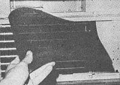
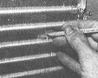
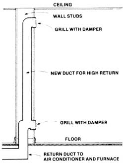
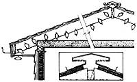
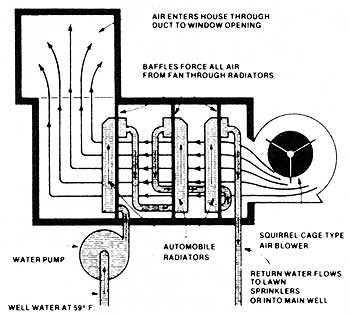

Energy-Efficient Home Cooling
May/June 1978
From Home Energy How-To , a Popular Science book by A.J. Hand, copyright 1977 by the author and reprinted with the permission of Harper 8 Row Publishers, Inc. Available in hard cover ($9.95) from any good bookstore.
"In a recent four-year period," says A.J. Hand, a former how-to editor at Popular Science magazine, "the number of U.S. homes with central air conditioning tripled. For much of the country-though-there are cheaper, more energy-efficient ways to keep cool."
And in the "Home Cooling" chapter (reprinted here in its entirety) of A.J.'s book, Home Energy How-to, you'll find detailed explanations of some of those ways to beat the heat, cut costs, and reduce energy use-all at the same time!-this coming summer.
Americans use more electricity just to run their air conditioners than is produced in all of China. And, while not so many years ago we all got along fine without air conditioning, today most Americans consider it a necessity rather than the luxury it is. Luxury or necessity-however you classify air conditioning-the fact remains that it consumes a lot of electricity. And it's an area of energy use that's in great need of conservation measures.
The air conditioner manufacturers realize this, and they're doing everything they can to make more efficient products. You can do your part too. First of all, don't buy or use an air conditioner unless you really need one. There are cheaper, less energy-consumptive ways of keeping cool, which we'll discuss later In this article. By all means try them before you turn to air conditioning. Even if they don't solve your cooling problems entirely, they'll still take some of the load off any air conditioner you decide to use later . . . saving energy and money all the while.
RATING ENERGY EFFICIENCY
If you decide you really need an air conditioner, think small, because refrigerating an entire house Is wasteful. Small window units can cool one or two rooms to which you can retreat when the rest of the house gets uncomfortable. And while you're thinking small, think "efficient".
The efficiency of an air conditioner is expressed by a number called the Electrical Efficiency Rating (EER). The EER is simply the cooling capacity of the unit in Btu's, divided by the unit's wattage. All air conditioners sold today must have the EER labeled on the machine. But if you buy a used unit with no EER label, remember that you can compute the rating yourself simply by dividing Btu's by watts.
What's a good EER? Well, it varies with unit size. Tiny portables might be considered good at an EER around seven, but a large room unit would have to rate over 10 before it could be considered highly efficient. Central units peak at around 10 or 11.
If you want to figure how much it will cost you per year to run an air conditioner, multiply the unit's wattage rating by the hours the unit runs (1,000 is about average), then multiply again by your cost for electricity in dollars per kilowatt hour. Divide this number by 1,000 and you have your yearly operating costs.
Extra efficiency almost always costs you extra money: A higher EER means a higher initial purchase price. If you want to find out how many years it takes a high-efficiency unit to pay back its extra cost over a cheaper, low-EER machine, just compute yearly operating costs for both machines as described in the preceding paragraph. Then divide the yearly savings of the more efficient unit into the difference in purchase price between the high and low-cost machines.
Chances are you'll find the high-efficiency unit pays off in three to eight years in the South, where air conditioners are run more frequently. But it may take 20 years for such a machine to pay for itself up north. Since the life span of a typical air conditioner is only 10 to 15 years, the high EER wouldn't pay off. But if you live where it takes this long to make up the difference, you really don't need an air conditioner anyway since you'll only be using the machine about eight days a year.
Of course all these calculations are based on the ridiculous assumption that your electrical rates will remain stable. No doubt, however, they will rise . . . and as they rise the economics of the efficient unit get better and better.
Buying the right size air conditioner is important, and-fortunately-it's better to err on the small side than it is to get one that's too large. This is because much of an air conditioner's ability to keep you cool comes from its dehumidifying abilities. A large unit cycles on and off so often that it never gets a chance to dry the air. A smaller unit, on the other hand, will run longer each time it turns on and will do a much better job of dehumidifying. While your dealer can help you select the right sized unit for your needs, you can do an accurate job yourself by consulting a copy of the "Cooling Load Estimate Form", available from the Association of Home Appliance Manufacturers, 20 N. Wacker Drive, Chicago, III. 60606.
TUNING YOUR AIR CONDITIONER
If you have to use an air conditioner, you should always keep it in tune. This is a simple job consisting of a few easy steps, many of which need be performed only once a year. Other steps-such as cleaning filters-should be performed at least monthly.
If you have central air conditioning, shut off all the power to the unit. Then check to make sure the fan belt on the blower is properly tensioned. Press down on the belt halfway between the pulleys and measure the deflection. It should run around 1/2 to 3/4 of an inch. If the belt is loose, tighten it. But if it's too tight it can create excessive loads on the bearings, so don't overdo things.
Air conditioning requires a greater flow of air than heating does. If your blower has an adjustable pulley, make sure it's set to run at the highest speed. To make the adjustment, loosen the set screw on the pulley and twist the outer flange so that it is as close as possible to the inner flange. This narrows the pulley and forces the belt to ride higher. Check belt tension after making the adjustment.
Clogged filters are probably the biggest wasters of energy your cooling system has to tolerate. Filters should be cleaned or replaced once a month, but most homeowners don't do the job at all. While you're in the cleaning mood, clean the condenser and evaporator coils. Use a commercial coil cleaner, available at a refrigeration supply house. And when you're there, pick up a fin comb . . . a simple plastic tool used to straighten bent fins.
To use the cleaner, spray it onto the coils and fins and let it set for about 10 minutes. Then rinse with a hose or a spray of clean water from a squeeze bottle. If the coils are still dirty, give them a follow-up treatment. To use the fin comb, match the teeth-per-inch rating on the comb to the fins per inch on your air conditioner's coil. (The comb will have different sections with varying teeth spacing.) Then run the comb through any bent fins.
Last, check to make sure that airflow over your air conditioner's outdoor condenser coil is not blocked by bushes or other vegetation. Shading the condenser will raise efficiency about two percent, as long as the airflow is not blocked. Small evergreens planted a safe distance away from the condenser will provide the shade. Just be sure to prune them back if they begin to choke oil air to the coil.
Room air conditioners should get the same treatment as central units. Clean the filters and coils, and oil the motor if it has oil fittings. Straighten bent fins, and check outdoors to be sure the airflow through the unit is not being impeded.
ADJUSTING AIRFLOW
If you have a window unit, and if it has adjustable louvers to direct its airflow, set them to force the cool air upwards. Cool air naturally drops to the floor. Aiming it upwards will help distribute the air before It has a chance to stagnate at your feet (Unimpeded airflow is just as important inside the house as It is outside. Be sure no furniture or curtains block the air conditioner's output of cool air.)
Central conditioning units can be adjusted to distribute cool air just where you need it. With central heating, one can adjust dampers in the ducts to provide warm air to those rooms that should have it the most, and you can do the same thing with central air conditioning.
Rooms requiring one setting in winter will require a different setting in summer. So you'll have to change the damper adjustment every time you switch a central heating/cooling unit from heating to cooling. That's why it's a good idea to mark the position of the damper handle once you've found its ideal setting for winter heating. Then mark it again at its best setting for summer cooling.
Remember, too, that it's best to close down the dampers in ducts leading to rooms that need little cooling. This will provide more cool air to the rooms that need It most. The general rule is that rooms where there is a lot of activity or heat (the kitchen, for example) will need the most cooling.
Most air registers are located near the floor. This is fine for heating, but not so good for cooling. The cool air tends to come out at floor level and just stay there until It's picked up by the return air duct and routed through the cooling system once again. You keep recycling the same cool air over and over this way, and it never gets high enough in the room to have any cooling effect on most of your body. You can remedy this situation to some degree by installing clip-on or magnetic baffles over the central air conditioning system's registers, to direct the airflow upwards. (Of course you'll want to take these off during the heating season or you'll wind up with all the hot air hugging the ceiling during the winter.)
An even more effective way to spread cool air throughout all levels of a room is to use a high-return air duct system. With this method, a return air duct is placed up high-near the ceiling-where it draws off the hottest air in the room and sends it to the air conditioner for cooling.
To install a high return duct, remove the finished wall surface between the two studs that straddle a return duct mounted low in a wall. Then install a sheet metal liner or rectangular duct leading from the low duct up to a position near the ceiling. Install a new register grill at the high return and cover the wall again.
Now you can switch between the high return for cooling and the low return for heating by closing off one or the other with a metal plate. Or you can install grills with built-in dampers to achieve the same effect.
THERE ARE ALTERNATIVES TO AIR CONDITIONERS
There are many other techniques that will increase the summer cooling efficiency of a house. Adequate weatherstripping and Insulation, duct insulation, caulking, and such window adaptation ideas as double glazing, application of light control film, and installation of storm windows will all provide warm-weather benefits as well as certain wintertime advantages.
VENTILATION
And there are some other ideas for cooling that may well eliminate the need for air conditioning altogether. Probably the most important is proper attic ventilation.
During the summer, temperatures as high as 130 degrees are not at all uncommon in an attic. This heat, in effect, turns your ceiling into a radiant heater. With proper ventilation-either natural or fan-induced-you can drop attic temperatures way down. Most effective are fans installed near the peak of a roof, and controlled by thermostat. The 'stat will turn the fan on at a temperature usually around 110 degrees, then cut it off when the heat drops to about 95.
Roof-mounted vents are more effective than gable-mounted fans because you can position them near the midpoint of a roof's length. Most are sized to fit right between the rafters, so installation is quite simple. Just cut a hole through the roof and place the unit in position, slipping the attached flashing up under the shingles. Then, inside the attic, wire the fan to a junction box. For best results, the fan should be teamed up with soffit vents. Installing gable fans is usually even simpler since there's no need to cut through the roof.
Natural attic ventilation can be increased by installing ridge vents or turbine ventilators. Ridge vents provide a continuous-though weatherproof-opening for the full length of a roof's peak. The total free or open area of the roof vent should then be matched by an equal area of soffit venting to provide a free flow of cooling air. The total area of roof and soffit vents should be equal to at least 1/300 of the attic floor area, and twice that much vent area is even better. In addition to carrying off hot air, vents also exhaust humidity, which provides another cooling bonus.
Before air conditioning came along, ventilation was the only way to cool a home. You can set up ventilating air currents with a fan or rely on natural powers of convection. The trick is to bring in cool air near or below ground level and exhaust it from the attic.
Convection or stack cooling relies on the hot air within your home rising and creating a chimney or stack effect. For best results, open your basement windows to let in cool, close-to-the-ground air.
Once the cooler air is in the house, it should have an unrestricted path through which to travel. Open the door at the head of the basement steps, make sure all interior doors are open, and open the door to the attic. If your attic has no door-just a hatch or a folding stairway that will inconveniently block up a hallway-put a screened hatch in your upstairs ceiling. Last, provide some way for hot air in the attic to escape. Roof vents, gable vents, ridge vents, or a turbine ventilator will all help get the air moving.
If you decide to use fans or powered vents, it still pays to set your home up as described. The stack effect will relieve the fan of some of its work and help encourage better airflow. Remember, ventilation can help cool your home by getting rid of trapped heat, but it will not make your home any cooler than the temperature outside. On the other hand, the slight breeze created by ventilation will make your home feel cooler than the thermometer might indicate.
ROOF COLOR
Everyone knows that a white roof is cooler than a dark one. It reflects a substantial part of the sun's energy. But did you know you can change the color of roofing without reshingling? Roofing paints are the secret. They can go on over shingles, roll roofing, even metal, and can add years to the life of the roof . . . by virtue of both protective coating and reflective cooling. Most large paint stores carry roofing paints, as do Sears and Montgomery Ward.
RADIATOR COOLERS
If you happen to have a well, spring, or other source of cool water on your property, you can cool your home very effectively without running an air conditioner. One fellow refrigerates his six-room Oklahoma house by pumping well water through three automobile radiators housed in a wooden box outside one of his windows. A squirrel-cage fan forces air through the radiators and into the window. Even in 100-degree weather this system keeps his home's temperature down to 70 degrees. Water at 59 degrees is pumped through the radiators at a rate of about 500 gallons per hour, and circulated water is returned to the ground via a second well.
ROOF SPRINKLERS
Water can cool your home another way: If you fasten a simple sprinkler-type hose-upside down-to the peak of your house's roof, you can use it to trickle water down the roof and set up an evaporative cooling cycle. Connect the sprinkler to an outdoor bib and adjust the flow to use as little water as possible . . . just enough to keep the roof wet down to the eaves is best.
|
Air conditioner filters should be cleaned or replaced every month. This is a foam type, cleaned by rinsing in water and wringing dry. Clogged filters raise cooling coats |
 Bent evaporator fins cut down on airflow and cooling efficiency. When just a few fins are bent, straighten by careful picking with a pencil or piece of wood. Don't use metal instruments. If large areas of the coil are bent, get a fin comb to straighten them. |
 A high air return gives better distribution of cooled air with central air conditioning. During the summer, open the top and close the bottom grill. In winter, do the opposite. |
|
 Continuous ridge vents can lower attic temperatures by as much as 15 degrees. Total open area of ridge vents should be matched by an equal area of soffit vents . . . which, together, should equal at least 1/300 the area of your attic floor in the northern U.S., or 1/150 your attic floor area in the South. |
 Powered roof vents with thermostatic controls are most effective when used in conjunction with soffit vents. An easy-to-install powered vent can lower attic temperatures up to 30 degrees, reduce cooling loads on a home, and prolong roof life. Remove shingles from between two rafters. Sabersaw a hole for the vent. Then slide the vent into place under the shingles and nail in place. Inside, wire the fan to a junction box. |
 Well-water cooling is possible with a setup like this. A 500- gallon-per-hour pump circulates well water through three junked car radiators housed in a plywood box. A fan blows air through the radiators and into the house through a duct leading to a window. Used water can go to lawn and garden, or can return to the earth via a second well. |
|
 |
|
|